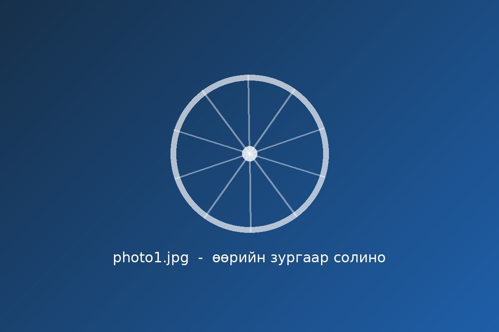
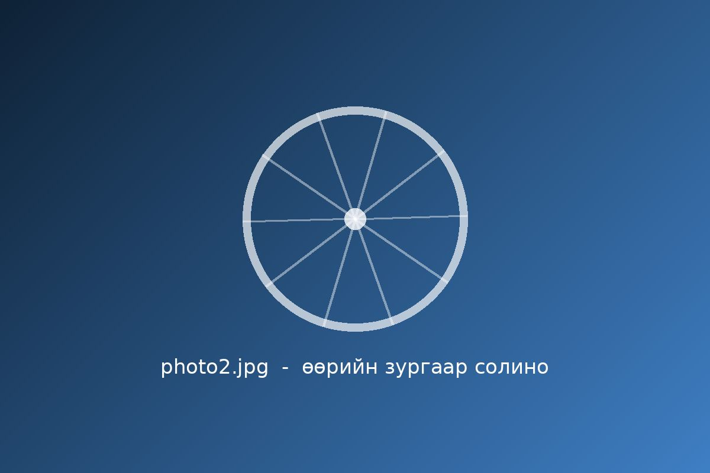
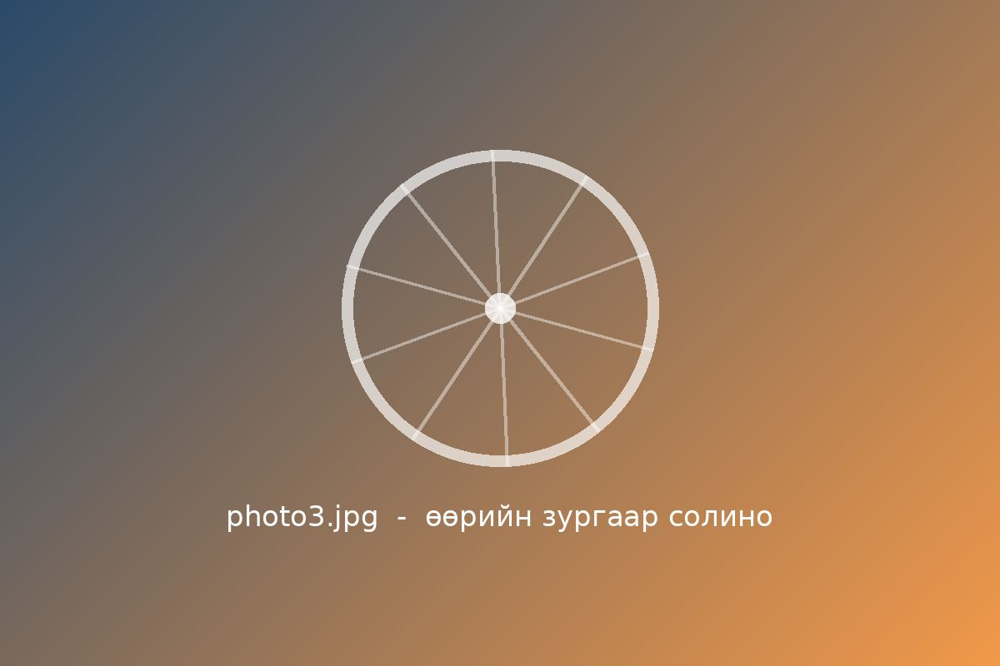
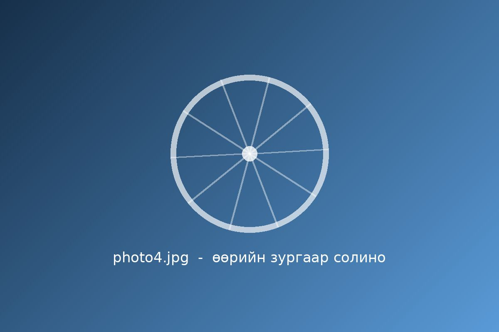
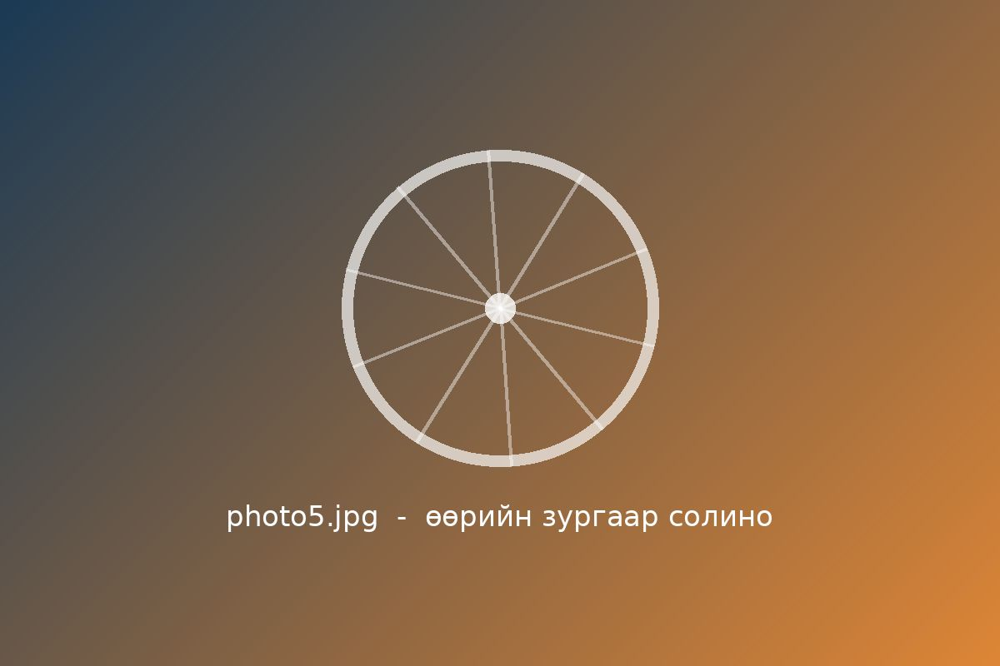
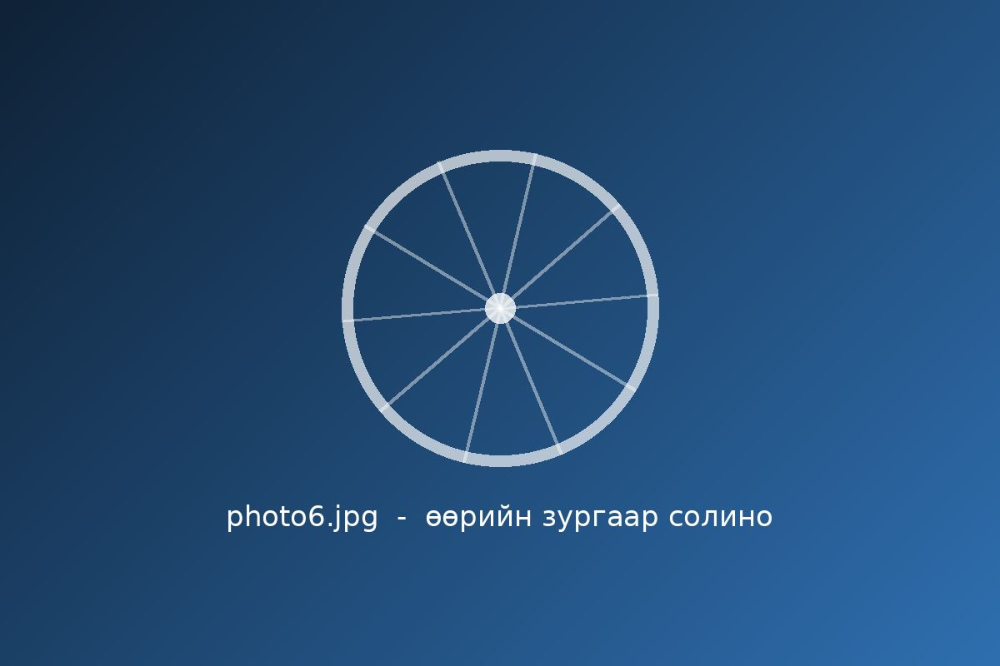

Хоёр дугуйн аяллын зургийн цомог
Улаанбаатар орчмын дугуйн маршрутуудаас түүвэрлэсэн зураг, бичлэг. Зураг дээр хулганаа аваачих эсвэл Tab дарж сонгоод ажиглаарай.
Цомог үзэх- Зураг
- 6
- Бичлэг
- 1
- Улирал
- 5-р сар - 9-р сар
- Байршил
- Улаанбаатар
Зургийн цомог
Карт бүрийн «Эргүүлэх» товчийг дарж маршрутын мэдээллийг үзнэ.
-

Туул голын эрэг Туул голын эрэг
Хотын төвөөс гол дагуух хавтгай зам.
-

Зайсан толгой Зайсан толгой
Өгсүүртэй, хотын харагдацтай.
-

Гачуурт Гачуурт
Хотоос гарч, ойн замаар.
-

Богд хан уулын бэл Богд хан уулын бэл
Уулын бэлээр дугуйн аялал.
-

Хотын төв Хотын төв
Сүхбаатарын талбай орчмын богино тойрог.
-

Тэрэлж Тэрэлж
Хотоос алс, байгалийн аялал.